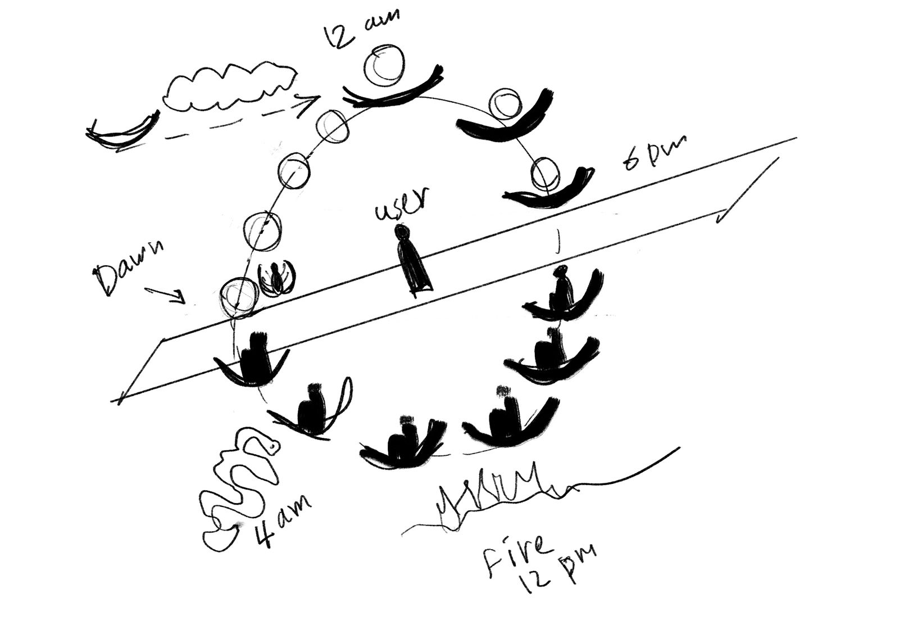
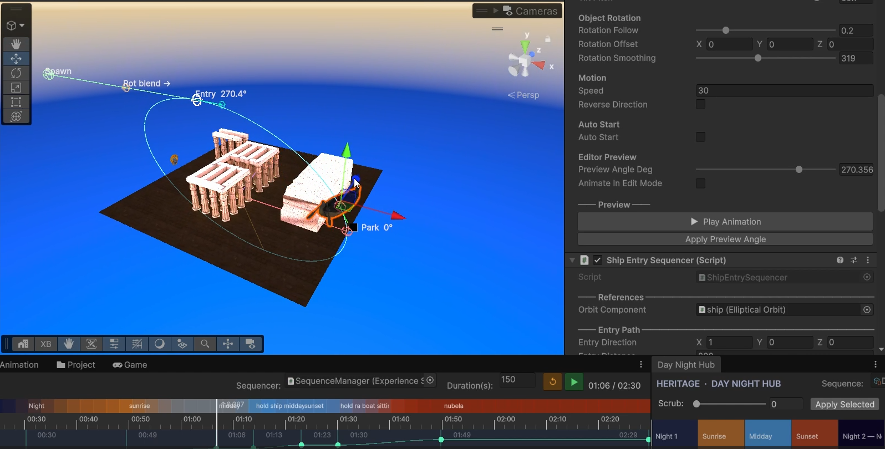

🐾
Youkii
Home
Contact
🌓
🌓
Home
Contact
Mandjet - The Boat of Millions of Years
Unity
XR
Storytelling
About
Immersive VR film inside
Luxor Temple
, telling the story of Ancient Egyptian God
Ra
and his daily journey across the sky
Created in Collaboration with Artist
Mena Safwat
My Contributions
XR Development
Technical Art (Shaders & VFX)
Editor Tool Development:
Sky Creator
,
Story Flow
,,
Lightmap Blender
Performance Optimization for standalone VR
Developed Exhibition operator Tools: Auto-reset experience when end, hotkey for admin to reset at anytime, credits scroller
Light Baking & Post Processing
Experimenting with different technology, effects and co-authoring some artistic decisions
Technical Challenges Solved
Deliverd a cinematic experience on
standalone VR
while maintaining smooth performance and visual quality
Created
day-night transition
system that support skybox, emission material, post processing, baked lightmaps
Developed custom shaders for seamless transition between multiple baked lighting states
Built Scalable Editor tools to accelerate iteration during production
Balanced visual fidelity and performance through custom rending techniques, baked lighting, targeted optimization for Quest 3
Translated Artist vision into real-time experience while balancing performance
Behind The Scenes
Boat Movement Initial Sketch

Boat Editor Tools

Skybox Creation
Sequnce Day times
© 2026 Youkii — Built with ☕ and Passion